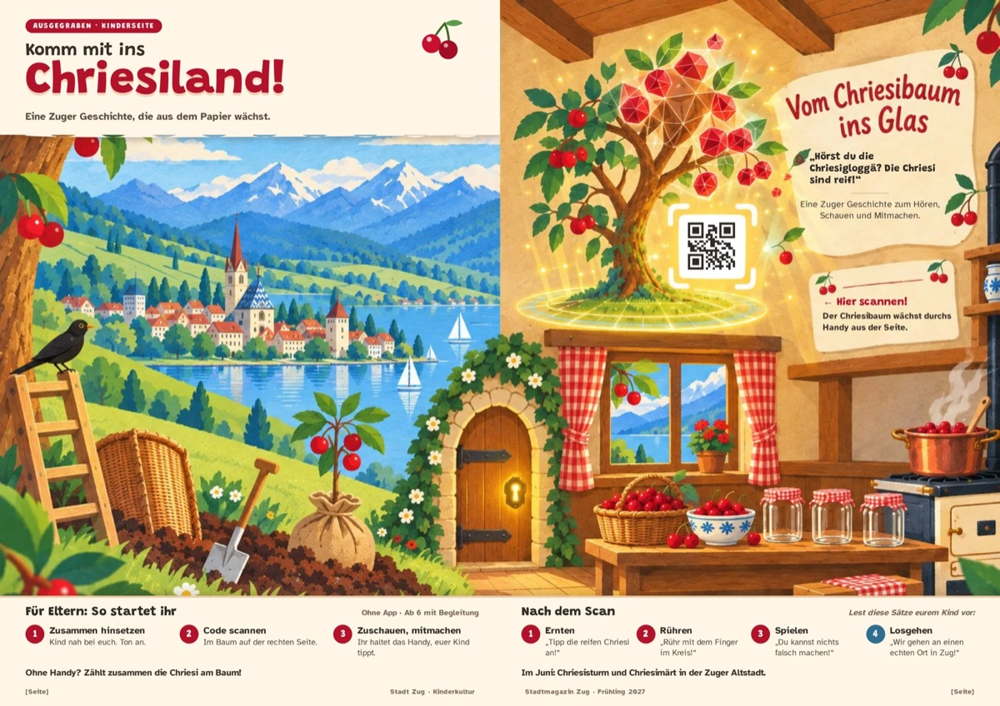

Vom Chriesibaum ins Glas
Web AR story for the kids' section of Stadtmagazin Zug, spring 2027

About the project
Children scan a code on the printed magazine pages with a phone, and the page comes to life. There is no app to install, no account and no tracking.
Try it
Scan this code with your phone to open the project.
The experience
- Digging: a farmer and the child dig up a chest with a book and a cherry stone inside.
- Pop-up book: the book unfolds and tells the history of Zug cherries, page by page.
- Game: inspired by the Chriesisturm ladder race, with a race, a cherry orchard, a kitchen and results.
How it was built
- Written with Three.js and MindAR
- 3D models generated with Meshy and prepared in Blender
- Fallbacks: a 3D view without AR, and a 2D SVG version without WebGL
- Narration in Swiss German with subtitles (text and audio are still provisional)